A tutorial for Minecraft
Minecraft can be a very challenging game. This website is designed to help you on your
journey through it and demolish your friends or prove to them how good you are.
Starting off with the basics
- In your new survival world, go to a tree to get some wood. Wood is an essential crafting material, for early game necessities
such as tooks and a bed. After that, make a wooden pickaxe, mine for stone and get 16. This will be enough to get a stone sword, axe, pickaxe, and a furnace where you can cook your food. The other two, a shovel and hoe are not needed.
- If you still have daylight, find some sheep and get their wool to make a bed and survive the first night by sleeping in it.
It is not necessary to make a house or base as in the beginning of the game, you will scavenge for better gear and then towards the
middle game you would be more sedentary.
- Now find a cave that looks like it has potential for ores such as iron and diamond. Diamond is not needed, but if you can ever find some, that is amazing, and you should capitalize off of it.
If you do see gold, grab some because that will be important for trading with piglins in the nether, for later.
- Now you can start building your house, preferably in a plains biome near a lake, village, and forest which can provide great materials.
- Make sure to keep in mind of making utilities like golden apples, a bow with arrows, and stacks of blocks from trips mining, which will be useful to stack up in the End. Make sure to have a water bucket at all times to break fall damage.
All of our Important Utilites so far
- Now you are set up perfectly to beat the game assuming that you are in iron armour. You have got to mine obsidian with a diamond pickaxe, or get a water bucket to turn a lava pool into the shape of a nether portal which is much faster.
A link to
- Find a nether fortress and find a blaze spawner. If you encounter wither skeletons, in the corridors of the fortress, place blocks 2 blocks off the ground. This will stop them from getting to you because they are too tall.
- Once you've killed blazes and have about 10 blaze rods, you'll need ender pearls.
You can either go into a warped forest biome where they spawn very frequently or trade with piglins using the gold I mentioned from earlier or find gold around the nether. Keep in mind that you will have to be lucky.
- Craft Eyes of Ender.
- Now you can start looking for the stronghold where you will enter the End dimension to slay the Ender Dragon. Throw them and they will lead you toward the stronghold. Once they change direction, it means you are pretty close.
- If you are over an ocean, and the stronghold is below, make a door so that you can create an air pocket and dig down.
- Once you find the portal room, place the Eyes of Ender in the End Portal pockets.
- Use a bow to destroy the End Crystals which the Dragon uses to regenerate its health. You can also pillar up with the blocks like before you hit the Crystals easier.
- If the dragon throws you up in the air, break fall damage with your water bucket. This is also good to push away angry Enderman, their weakness. If the dragon hits you with its dragon breath, place a block and stand on it to avoid it.
- When the dragon perches, use your sword to hit its head.
- After enough time of this, great job, you have beaten the game.
Building
Picking a theme
Think about a them you want to pick. My personal favorite themes to build are old-fashioned houses and interiors.
Color Palette
Pick a color scheme that would look nice on your build and stick to it. You may involve blocks with different textures. If your build was a run down villa, you might want to have sandstone and cracked sandstone.
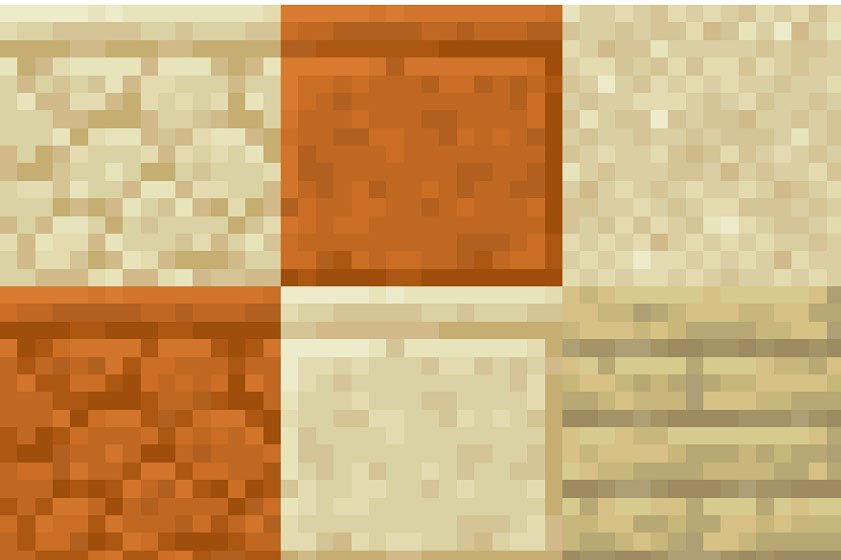
Outline
Before you start your build, make an outline in a specific block, if you're in creativ use different kinds of wool.
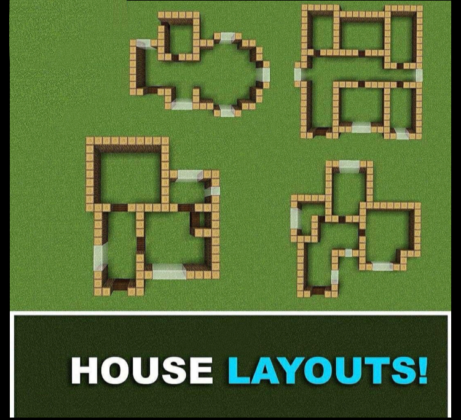
Depth
You use depth to not make your build look samey. You add different textures.
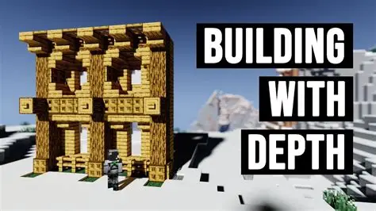
Some Biomes
| 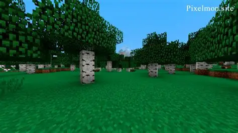 |
 |
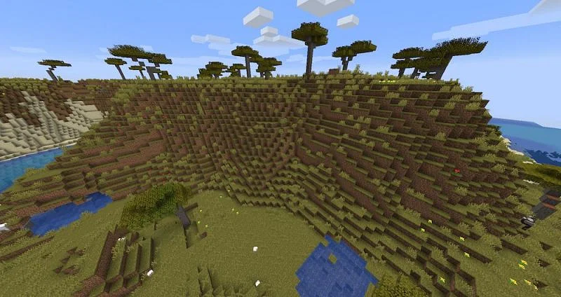 |
| 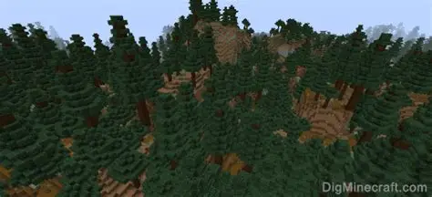 |
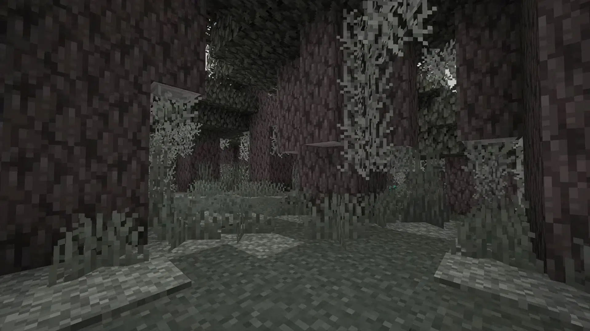 |
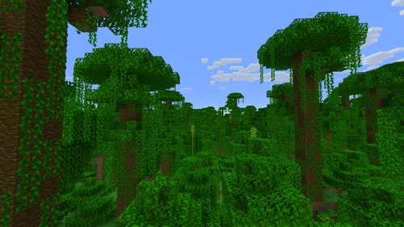 |
| 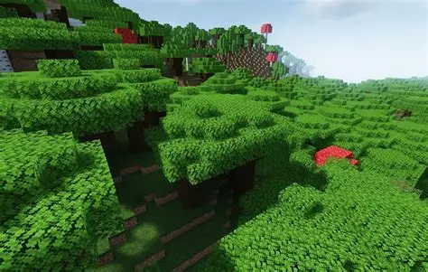 |
 |
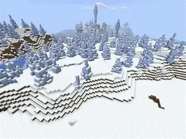 |
| 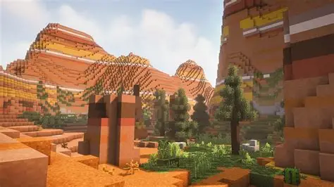 |
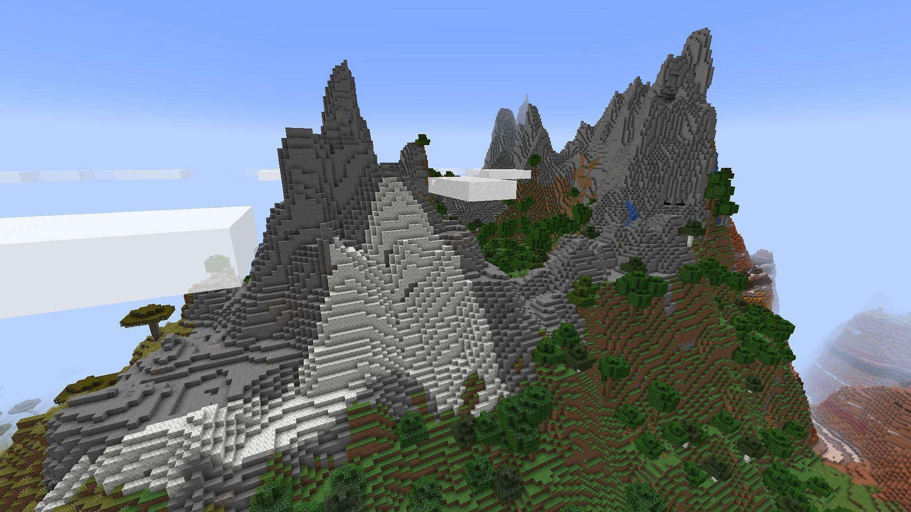 |
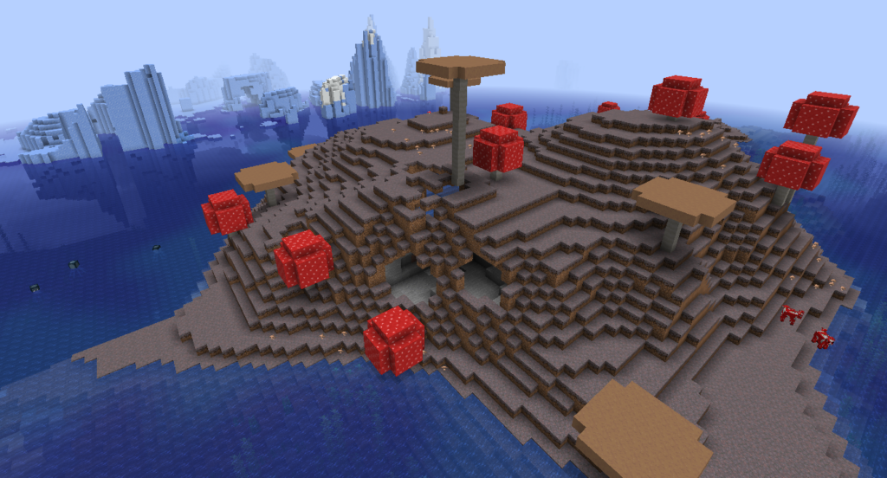 |
| 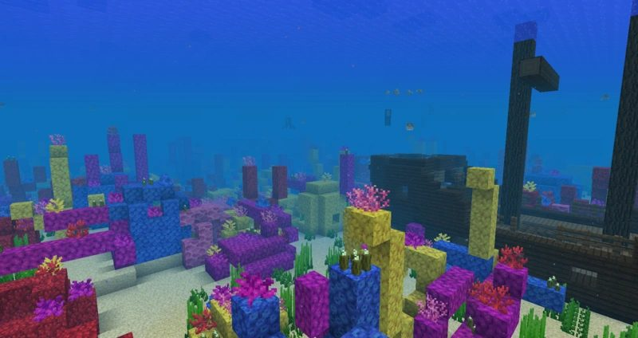 |
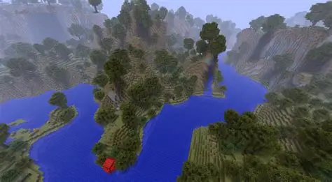 |
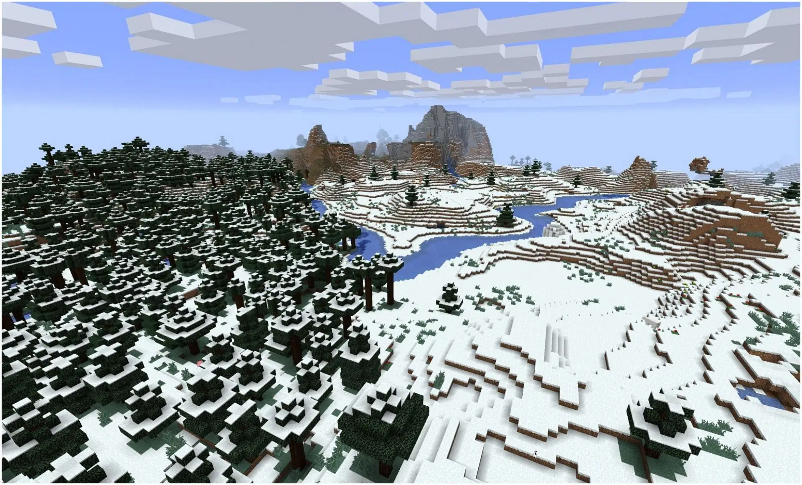 |
- Birch
- Plains
- Acacia
- Spruce
- White Oak
- Jungle
- Dark Oak
- Desert
- Ice Spikes
- Mesa
- Mountain
- Mushroom
- Ocean
- River
- River
Minecraft Farms
The farms I have provided with links are very useful for getting materials in the middlegame-postgame, [when you defeat the Ender Dragon] sequence.
A link toIron Farm
A link toGold Farm
A link toSugar Cane Farm
A link toTree Farm
A link toVillager Trading Hall